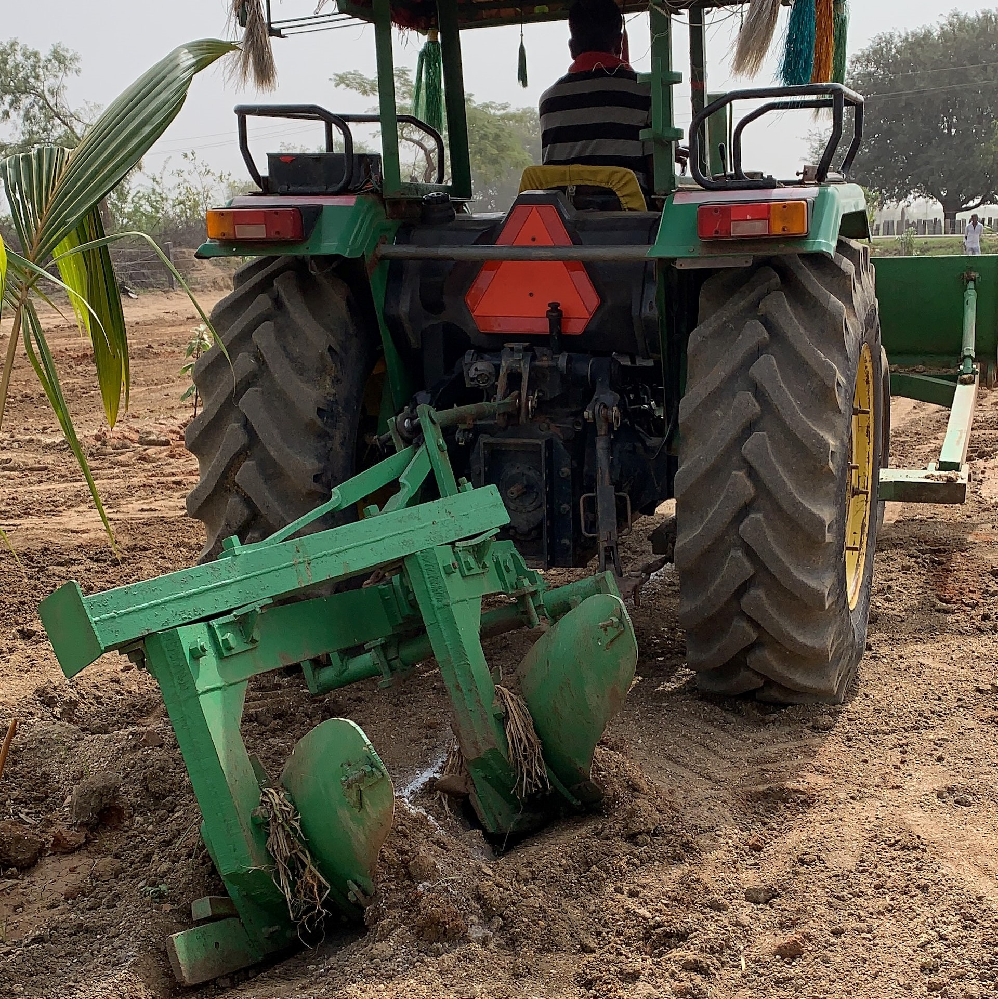

Krishi Yantra Dhare

The Krishi Yantra Dhare scheme, launched by the Government of Karnataka in 2014-15, aims to provide agricultural machinery to small and marginal farmers on a rental basis. This initiative helps reduce financial burdens on farmers while promoting modern mechanization for improved productivity.
Objectives
- Provide agricultural equipment on rent for timely farm operations.
- Reduce the cost burden on small and marginal farmers.
- Promote modern mechanization to enhance efficiency.
- Reduce dependency on manual labor in agriculture.
Implementation and Challenges
The scheme initially relied on private organizations to manage machinery rental centers at the hobli level. However, many centers faced financial difficulties due to low rental rates and high maintenance costs, leading to closures in some areas.
Recent Developments
- The government is now allowing Farmer Producer Organizations (FPOs) and cooperative societies to establish machinery hubs.
- Subsidies of up to 50% for individuals and 70% for institutions have been introduced to support the establishment of these centers.
- A total of 91 farm machinery hubs are planned to be set up across Karnataka.
- The government is considering transferring existing centers to FPOs for better management.
Impact on Farmers
- Farmers in operational areas benefit from timely access to machinery, improving productivity.
- Farmers in areas where centers have closed struggle with equipment accessibility, leading to delays in agricultural activities.
Future Prospects
The success of the Krishi Yantra Dhare scheme depends on proper implementation and management. Government initiatives to involve FPOs and increase subsidies are positive steps toward ensuring long-term sustainability.